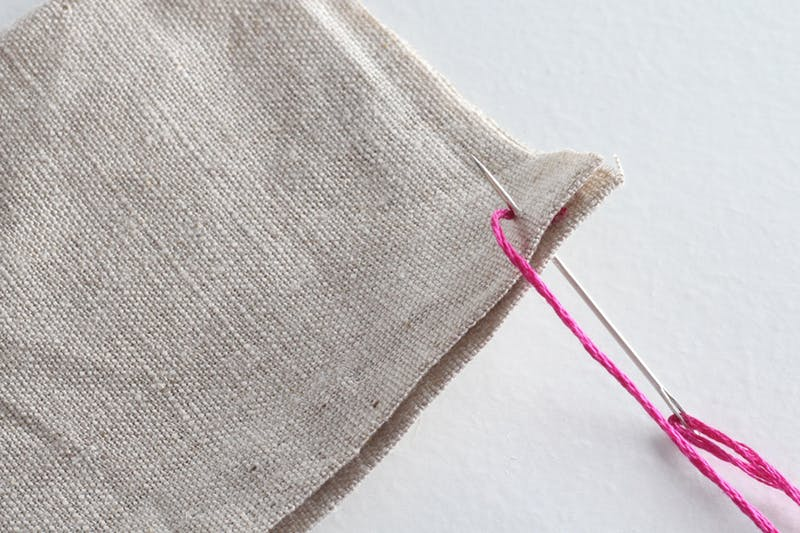

Let's Get Sewing!
Got your needle and thread ready? Here we go! Pick any of the three popular stitch types below to try out, or look up others online to learn more!
Running Stitch - Difficulty: Easy
The running stitch is similar to basting stitch, but with smaller stitches, roughly 1/8”, and a locking stitch at the end. This is great for quickly mending a seam that’s come apart, or for small spaces that are hard to reach with a sewing machine.
Running stitches like the ones above in green thread are normally what you'll use to sew a basic seam. When sewn in longer lengths, this stitch can be used as a basting stitch to temporarily hold two pieces of fabric in place. If you need a stronger seam, stitch shorter stitches.
Thread the needle and tie a knot in the end of the thread. Bring the needle out through the fabric from the backside, so the end knot stays hidden.
Move ahead a 1/2 inch or so, and push the needle back down through to the backside of the fabric.
Continuing in a straight line, move the needle ahead another 1/2 inch and bring it back up through the back to the top of the fabric.
Continue steps 1-3, keeping the stitches equally spaced until your fabrics are joined along the seam. When finished, the stitch will look like a long line of dashes.
Back Stitch - Difficulty: Medium
The back stitch is a very strong seam. It is typically used for heavy or dense fabric, or even to repair a seam. Start from right to left.
This stitch (made with pink thread in the photo above) is a small, very strong stitch that is great for sewing together seams that need lots of strength. You can also use this stitch for basic embroidery- it's useful when embroidering typography or other illustrations for home decor.
Thread the needle and tie a knot in the end of the thread. Send the needle up to the top from the backside of the fabric to hide the end knot.
Send the needle back down into the fabric (following in a straight line) about a half inch from the first stitch. You're essentially making a running stitch at this point.
Pull the thread taut from the underside of the fabric.
Bring the needle back up through to the top of the fabric, equidistant from the first stitch.
5. Instead of moving forward another half inch (as you would in a running stitch), bring your needle back to the left, and tag up with the end of the previous stitch.
Push the needle back down towards the underside of the fabric and pull taut.
Repeat!
Blanket Stitch - Difficulty: Hard
The blanket stitch is meant to edge fabrics and create pretty patterns on sewing projects. It is ideal for finishing off a blanket or minimizing wearing and fraying along edges.
The blanket stitch (pictured above in pink) is a decorative way of joining fabrics together. You've most likely seen this stitch before, as it's commonly used to sew appliqué and to finish the edges of blankets and felted toys. This stitch is meant to be seen, so use whatever thread color looks best with your project.
Thread the needle and tie a knot in the end of the thread. Send the needle up by starting it in a middle layer of fabric. This will hide your end knot.
Pull the thread taut, and circle back around to make the first loop around the edge by sending the needle under the bottom layer and bring it out on top in the exact place you started. Do not pull the loop shut.

Bring the needle through the loop and pull taut.
Move down the seam about a 1/4 of an inch and send the needle through the bottom layer, up to the top.
Pull on the thread, but leave a small loop.
Bring the needle through the loop and pull taut.
Repeat until your project is complete.
Sew Happy
Hannah
Hancock High School
Exploring Computer Science Pilot Course, 2nd Block
Last Updated: May 2018
https://github.com/hcrawford395/sewhappy/
Sources: Click Here